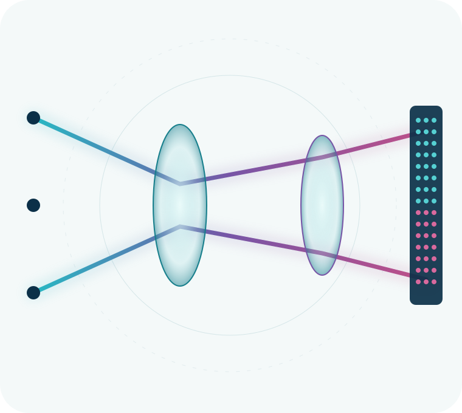

OptoLAB
University of Modena and Reggio Emilia
Light, measured with purpose.
Optical technologies for biomedical imaging, sensing and ophthalmic instrumentation.
Led by Prof. Luigi Rovati, OptoLAB brings together optics, electronics, embedded systems and computation to develop and characterize optical and optoelectronic measurement systems for biomedical and ophthalmic applications.

Research areas
Across optics, instruments and computation
We investigate measurement chains as connected systems: optical interaction, sensor response, electronic acquisition and computational interpretation.
01
Ophthalmic instrumentation
Optical and optoelectronic approaches for eye diagnostics, imaging and measurement-quality support.
02
Biomedical optical imaging
Imaging architectures and acquisition methods designed around biological and environmental measurement questions.
03
Wearable optical sensing
Compact sensing platforms for light exposure, visual-environment monitoring and embedded acquisition.
04
Spectral sensing
Colorimetric, photometric and radiometric methods, including calibration of compact multi-channel sensors.
05
Embedded acquisition
Hardware–software co-design for experimental control, sensor readout and portable prototypes.
06
Computational imaging & AI
Computational methods for image quality, feature extraction and interpretation of optical data.
Selected work
From measurement idea to validated method
Recent work spans calibrated compact sensors, ophthalmic measurement support and wearable monitoring of the visual environment.
Multichannel sensor calibration
A flexible method for photometric and radiometric measurements with compact, low-cost multi-channel sensors.
Ophthalmic measurement support
Eye-position monitoring and image-quality assessment methods designed to improve ophthalmic measurements.
Wearable visual-environment monitoring
A wearable optical approach for characterizing personal light exposure and visual habits relevant to myopia research.
Capabilities
Building the complete measurement chain
Our work spans the interfaces between light, hardware and information, from optomechanical prototyping and sensor characterization to embedded acquisition and computational analysis.
- Optical architecture — illumination, collection and sensing concepts
- Optoelectronic instrumentation — sensor interfaces and measurement electronics
- Embedded systems — acquisition, control and device communication
- Experimental software — desktop tools, protocols and data inspection
- Calibration — photometric, radiometric and multichannel workflows
- Computational methods — signal processing, imaging and artificial intelligence
{ }
Open science & software
Inspectable tools for learning and research
Public repositories make methods easier to examine, teach and extend. Explore OptoLAB resources for sensor calibration, embedded camera acquisition and serial instrumentation.
Collaborate
A measurement challenge is a good place to start.
We welcome conversations with academic and industrial partners working at the intersection of biomedical optics, sensing and research instrumentation.